40Life
Life Outside Engineering
The best engineers I know are well-rounded people. Here is what I love to do when I'm not studying or building something.
41Running
Training Log
Powered by Strava, updated every night via GitHub Actions.
42Hobbies
What I Do For Fun
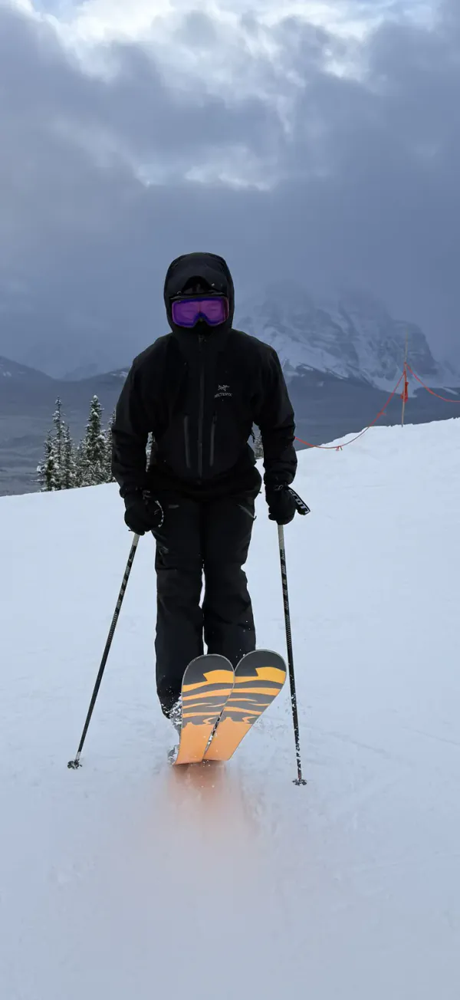
Skiing
I grew up skiing in Banff, and nothing beats a powder day in the Rockies. Ski touring the Alps is on the list.
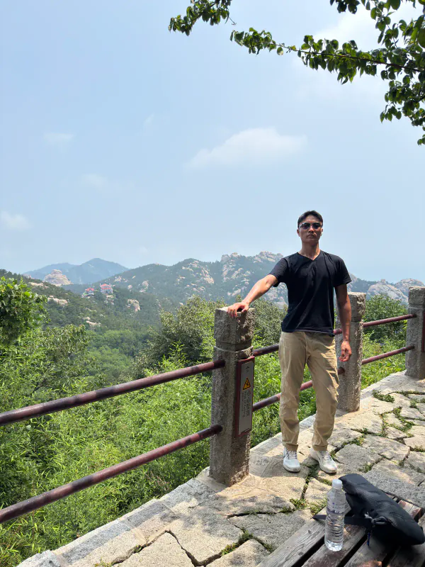
Hiking
Just like skiing, most of my best hikes have been in Banff, the kind of trails where you're too tired to think about anything else. A good way to reset between school terms. The photo is from a hike in China.
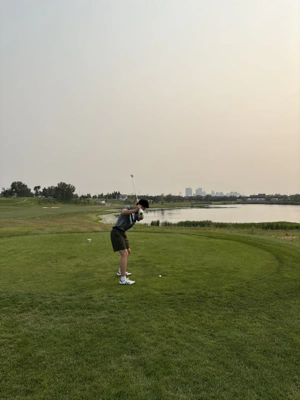
Golf
I picked up golf during my senior year of high school and have been itching to play ever since. I'm always up for a casual round with friends or family when the weather's good. Still working on keeping it out of the trees.
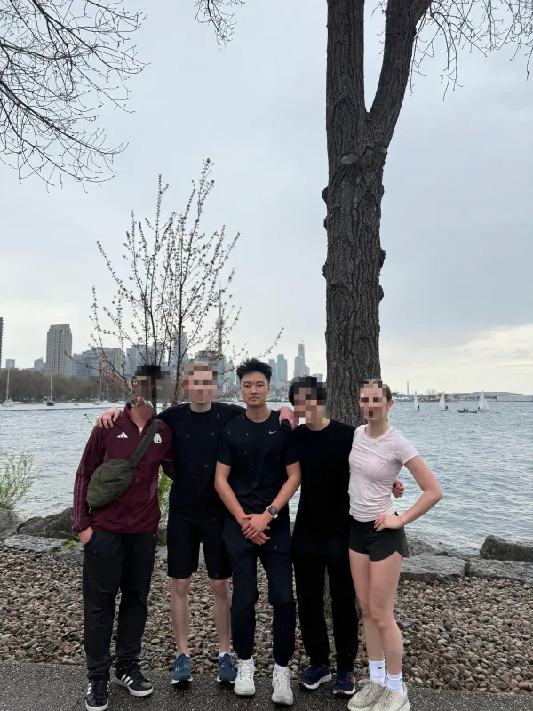
Running
My go-to way to clear my head and think about new ideas. No goal in particular; I just love running, especially downtown along the Lake Ontario waterfront.
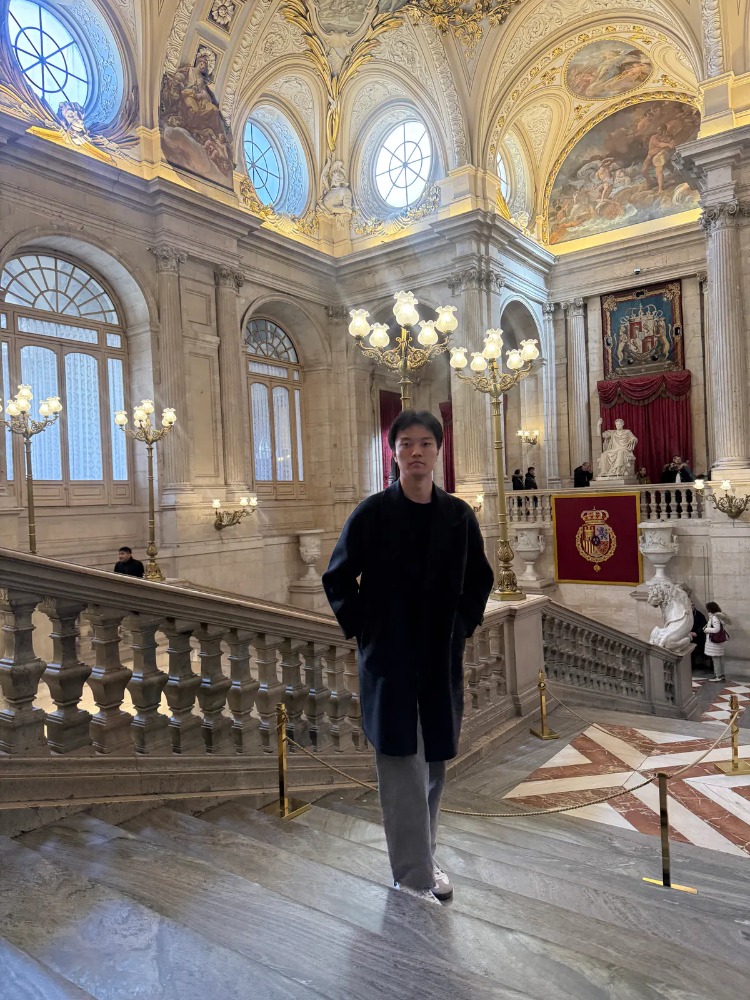
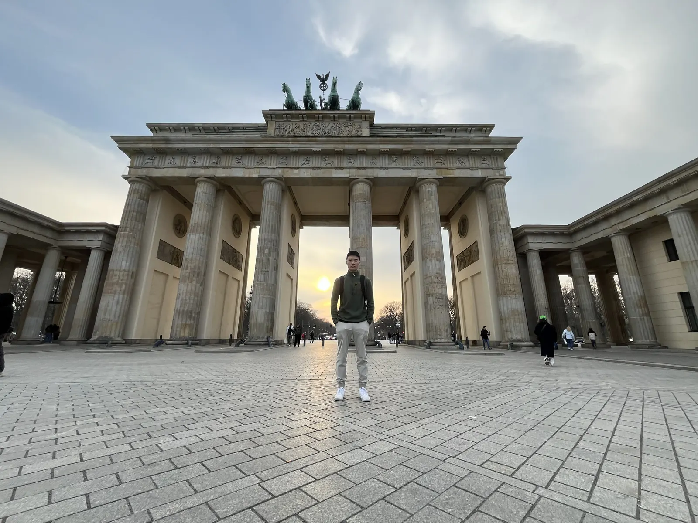
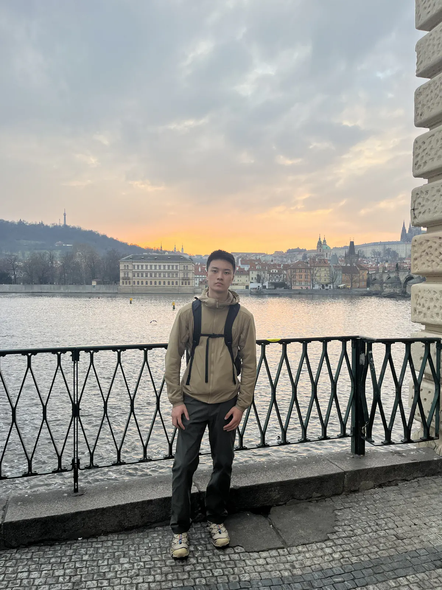
Travelling
I travel to see how things are built. The engineering, the history, and the different ways people have solved the same problem are always fascinating. Every city has its own answer to how infrastructure, technology, and public life should work, and it's hard not to notice that once you start looking. The food is always a plus as well!
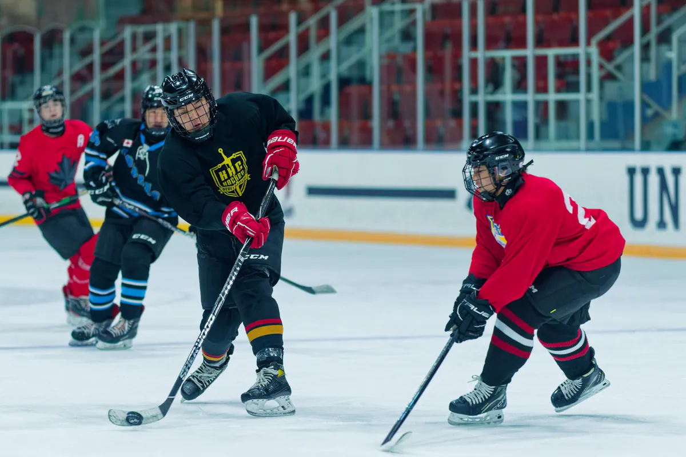
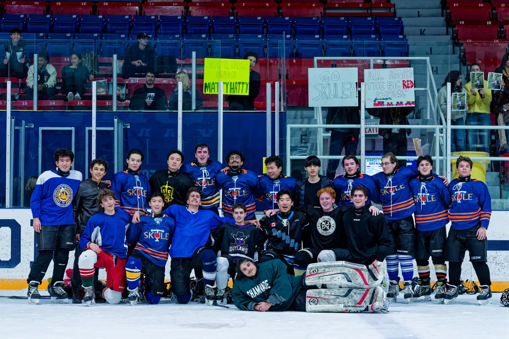
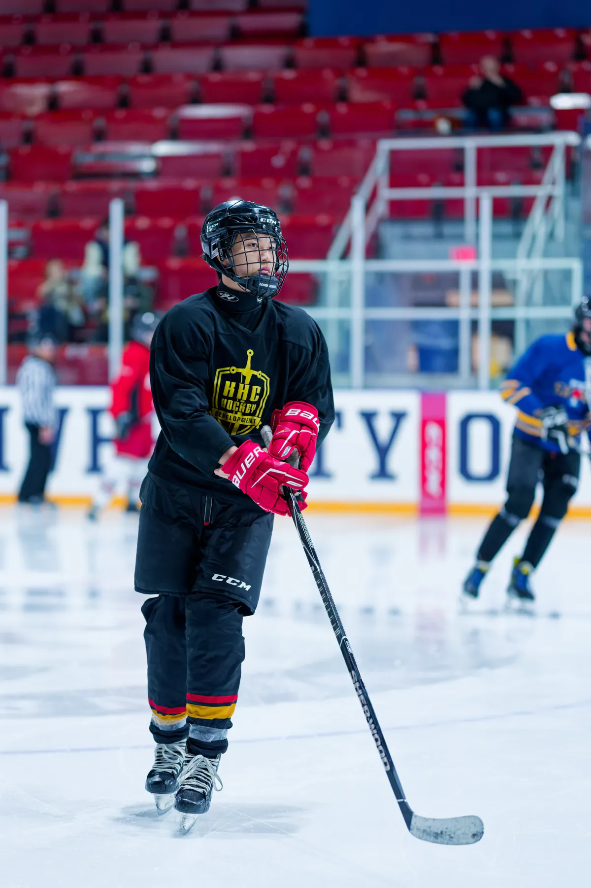
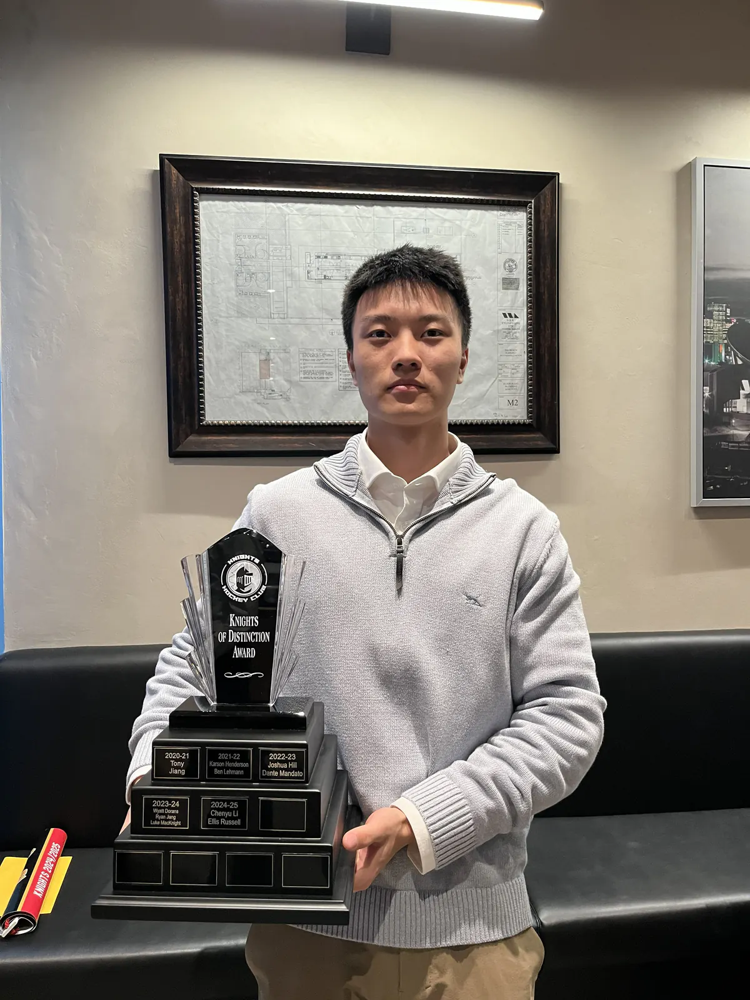
7Hockey
I started playing club hockey at six and never really stopped. More than a decade later, I still get out to rip pucks whenever I can, and this year I joined intramurals to play for the Faculty of Engineering against other University of Toronto faculties. I've also done plenty of coaching, both privately and as a volunteer with two U11 teams at Knights Hockey Club through high school, which turned out to be great practice at explaining things clearly and adjusting on the fly.
The game, team and skating photos are from this season's engineering intramurals at Varsity Arena.
43Volunteering
Giving Back
Engineering is most powerful when it creates opportunities for others.
Calgary Food Bank: CANstruction
CANstruction Calgary, 2024 and 2025
- I competed in the 2024 and 2025 CANstruction events for the Calgary Food Bank, designing and building structures made entirely from donated cans alongside engineers from Fluor Corporation.
- Every can is donated to the food bank once the competition ends. Photos from both years are on the projects page.
Coaching: Knights Hockey
Knights Hockey, U11 volunteer coach
- I was a volunteer coach for the U11 Division 1 and 2 White Knights Hockey Club teams in the 2023–24 and 2024–25 seasons. I ran on-ice practices, gave players feedback during games, and helped them develop their skating, puck handling, and game sense.
- Coaching kids at that age is a good reminder that explaining something clearly matters just as much as knowing it.
Undergraduate Scholarships and Awards Committee
Faculty of Engineering, University of Toronto, student representative
- I served as the student representative on the Faculty of Engineering's Undergraduate Scholarships and Awards Committee, sitting alongside faculty and staff to review applications and help decide how scholarship funding is allocated.
- It gave me a look behind the scenes at how scholarships are actually awarded: the criteria the committee weighs, how funding is spread across a large pool of applicants, and where the student voice is meant to carry weight.
- Reviewing applications meant reading through academic records, extracurricular involvement and personal statements, then weighing applicants against one another fairly and consistently.